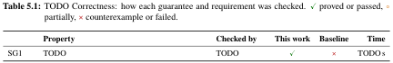
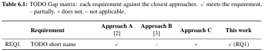

TODO Title of the paper
Extraction notes
| detected in the PDF | count | declared in the included sources |
|---|---|---|
| figure | 3 | 3 |
| table | 2 | 2 |
| box | 8 | 8 |
| tag item | 7 | 7 |
| theorem-like | 3 | 3 |
| tag-list label in the .aux | 7 | 7 |
- lines not assigned to any block: 0
- margin-note lines ignored: 35
Page grid
Rubric map
| criterion | top score (sheet) | carried by | evidence in this skim |
|---|---|---|---|
| A Szerkesztés, stílus (0–5) | “4–5: kiváló (ha a dolgozat közel hibamentes, jól tagolt, követhető, gördülékeny stílusú)”. The sheet also says: “Terjedelmi korlát 30–35 oldal. Ettől eltérés esetén 3 oldalanként 1 pont levonás javasolt.” “Műszaki tudományi OTDK szekcióba 50 oldal felett nem fogadnak dolgozatot.” The sheet recommends that reviewers deduct the point; it does not require them to.all bands
OTDK szekcióba 50 oldal felett nem fogadnak dolgozatot. | the whole paper | [detected] main text 8 pages (p. 1–8); the sheet: 30–35, 22 pages outside: about 7 point(s) off (1 per 3 pages) [detected] outline: 7 chapters, 19 sections, 0 subsections, 0 subsubsections, 12 run-in heads [detected] no stretch of plain text over 1 page without an anchor [placeholder] template text visible in 40 place(s); TODO printed 67× [detected] tag references clickable: 8 of 10 |
| B/1 Ábrák, táblázatok (0–4) | “4: kiváló (a dolgozat megfelelő számú és jól átgondolt ábrát, táblázatot tartalmaz, és a szakirodalmi hivatkozások pontosak)”.all bands
| 1 Introduction (intro) | [placeholder] 3 figures, 2 tables in the main text; per chapter: 1: 1F/0T; 2: 0F/0T; 3: 1F/0T; 4: 0F/0T; 5: 0F/1T; 6: 1F/1T; 7: 0F/0T; template text in Figure 1.1, Figure 3.1, Figure 6.1, Table 5.1, Table 6.1 [placeholder] leading figure: Figure 1.1; shows template text "TODO" [detected] 3 sources cited (3 citation links); bibliography 3 entries |
| B/2 Hivatkozások, irodalom feldolgozás (0–4) | “3–4: újszerű ipari megoldások és kutatási eredmények (a dolgozat – az újszerű ipari megoldásokon túl – bemutatja a dolgozat témakörében releváns kutatási eredményeket a szakterületen)”. B is the average of B/1 and B/2.all bands
akkora B bírálati szempont pontszáma a B/2. | 2 Background (background); 6 Related Work and Gap Analysis (related) | [placeholder] related work: ch. 6 Related Work and Gap Analysis, 1 page, 8 text lines, 2 citation links; template text in 4 place(s) [placeholder] background: ch. 2 Background, 1 page, 7 text lines, 0 citation links; template text in 4 place(s) [placeholder] gap matrix: Table 6.1; shows template text "TODO" [detected] bibliography: 3 entries |
| C A dolgozat témája (0–8) | “7–8: tudományos vizsgálat szükséges (ha a dolgozat témája korszerű, nem lezárt, vizsgálata magas szintű, tudományos, elmélyült tudást igényel)”.all bands
| 1 Introduction (intro) | [placeholder] abstract: 125 words; shows template text "TODO" [placeholder] introduction: ch. 1 Introduction, 1 page, 17 text lines, 0 citation links; template text in 5 place(s); sections —; run-in heads ['Context.', 'Problem.', 'Requirements.', 'Gap.', 'Contributions.', 'Structure.'] [placeholder] research questions: RQ1; RQ1 shows template text "TODO" [placeholder] leading figure: Figure 1.1; shows template text "TODO" |
| D/1 Tudományos újdonságtartalom és kontribúció (0–5) | “5: újszerű (legalább hazánkban újszerű, vagy eddig még nem létező megoldás)”; one step below, “3–4: inkrementális (értékes inkrementális kontribúció, létező megoldások apró továbbfejlesztése)”.all bands
| 3 Approach (approach); 4 Implementation (implementation); 6 Related Work and Gap Analysis (related) | [placeholder] contributions: C1; C1 shows template text "TODO" [placeholder] gap matrix: Table 6.1; shows template text "TODO" |
| D/2 Technikai helyesség és színvonal (0–5) | “5: kiváló (kimagasló színvonalú kidolgozás, a közölt eredmények helyessége kétségkívül megalapozott)”. D is the sum of D/1 and D/2.all bands
| 3 Approach (approach); 4 Implementation (implementation); 5 Evaluation (evaluation) | [placeholder] guarantees: SG1; SG1 shows template text "TODO" [placeholder] assumptions: AS1; AS1 shows template text "TODO" [placeholder] adversaries: ADV1; ADV1 shows template text "TODO" [placeholder] theorem-like statements: 1 Definition, 1 Lemma, 1 Theorem; 1 proof; Definition 1, Lemma 1, Theorem 2 show template text "TODO" [placeholder] correctness table: Table 5.1, rows for 1 of 1 guarantees; shows template text "TODO" |
| E Bevezetés és az eredmények értékelése (0–8) | “7–8: teljeskörű – A bevezetés megfelelő és az elért eredmények pontosak és teljesek, az értékelés megalapozott. A szerző skálázhatósági, robosztussági vizsgálatokat is elvégzett, mellyel igazolta, hogy rendszere ipari környezetben is megállja a helyét”.all bands
| 1 Introduction (intro); 5 Evaluation (evaluation); 7 Conclusion and Future Work (conclusion) | [placeholder] contributions: C1; C1 shows template text "TODO" [placeholder] evaluation: ch. 5 Evaluation, 1 page, 12 text lines, 0 citation links; template text in 3 place(s) [detected] research questions mentioned in the evaluation or conclusion: 1 of 1 [missing] no figure or table about scalability (by caption) [missing] no figure or table about robustness (by caption) [placeholder] limitations: LIM1; LIM1 shows template text "TODO" [detected] contributions restated in the conclusion: 1 of 1 |
Outline
The paper as skimmed
Abstractplaceholder: TODO
[1 Field, 1–2 sentences, for any computer scientist: TODO why this area matters.] [2 Background, 2–3 sentences, for readers in related fields: TODO what the specific setting is and what existing approaches do.] [3 Problem, 1 sentence: TODO the general problem this work addresses, often starting with “However”.] [4 Main result, 1 sentence: TODO “Here we show that …” or an equivalent; this is the contribution in one sentence.] [5 Comparison, 2–3 sentences: TODO what the result reveals compared with what was known before, with the headline numbers from the evaluation.] [6 Context, 1–2 sentences: TODO what the result means for the field more generally.] [7 Broader perspective, optional, 2–3 sentences, for any computer scientist: TODO where this leads, e.g. the most important future work.]
Kivonat (Hungarian abstract), 1 lines
1 Introduction p. 1B/1CE
TODO Two or three sentences: the actors, what they want to do, and what goes wrong today. Every chapter returns to this scenario, so choose one small enough to follow and rich enough to show every requirement.
A property the running example needs, stated so it can be checked.
A theoretical contribution: a model, formalisation, algorithm or protocol, with what it guarantees (Chapter 3).
2 Background p. 2B/2
2.1 TODO First concept p. 2placeholder: TODO
TODO The scenario of Chapter 1 restated with this concept’s vocabulary.
TODO A precise definition the later chapters rely on.
2.2 TODO Second concept p. 2placeholder: TODO
3 Approach p. 3D/1D/2
3.1 Overview p. 3
TODO The scenario step by step: which component handles which part of it, and what each produces.
3.2 TODO Model or design p. 3placeholder: TODO
A participant who …
TODO How ADV1 plays out in the scenario, and which guarantee stops it.
The underlying signature scheme is existentially unforgeable under chosen-message attack.
TODO A helper statement.
4 Implementation p. 5D/1D/2
4.1 Overview p. 5
TODO The scenario as the implementation sees it: a configuration file, a model, or a test case.
4.2 Design decisions p. 5
5 Evaluation p. 6D/2E
5.1 Research questions p. 6
Does the approach handle the running example correctly?
5.2 Setup p. 6
5.3 Correctness (RQ1) p. 6
TODO The scenario with this work, against Chapter 1; every case is in Table 5.1.

5.4 Scalability (RQ2) p. 6
6 Related Work and Gap Analysis p. 7B/2D/1
6.1 Comparison criteria p. 7
TODO How the closest approach would handle the scenario, and which requirement it fails on.

6.3 Gap p. 7
7 Conclusion and Future Work p. 8E
7.1 Summary p. 8
TODO One or two sentences closing the scenario opened in Chapter 1.
7.2 Limitations and future work p. 8
The evaluation uses synthetic workloads only.
A.1 Appendix title p. 13
A.1 Appendix title p. 13
Back matter
- Acknowledgements, p. 9
- Bibliography, p. 10, 3 entries
- Hallgatói nyilatkozat generatív mesterséges intelligencia alkalmazásáról, p. 11
Walls of text
| chapter | longest stretch | lines | pages | stretches over 1 page |
|---|---|---|---|---|
| 1 Introduction | — | |||
| 2 Background | — | |||
| 3 Approach | p. 4–4 | 1 | 0.03 | 0 |
| 4 Implementation | p. 5–5 | 2 | 0.05 | 0 |
| 5 Evaluation | — | |||
| 6 Related Work and Gap Analysis | p. 7–7 | 1 | 0.02 | 0 |
| 7 Conclusion and Future Work | — | |||
Argument chains
Guarantees
| guarantee | assumptions cited | adversaries cited | correctness row |
|---|---|---|---|
| SG1 TODO Short name | AS1 | ADV1 | row |
Requirements
| requirement | gap-matrix row | evaluation |
|---|---|---|
| REQ1 TODO Short name | row | MISSING |
Contributions → conclusion
| contribution | restated in the conclusion |
|---|---|
| C1 TODO Short name | by name (fuzzy) |
Research questions → evaluation or conclusion
| RQ | mentioned |
|---|---|
| RQ1 TODO Correctness | plain text |
Reference quality
| target kind | items | with \label | mentions | linked | plain text | linked elsewhere |
|---|---|---|---|---|---|---|
| contribution | 1 | 1 | 0 | 0 | 0 | 0 |
| research question | 1 | 1 | 2 | 0 | 1 | 1 |
| requirement | 1 | 1 | 1 | 1 | 0 | 0 |
| assumption | 1 | 1 | 2 | 2 | 0 | 0 |
| adversary | 1 | 1 | 3 | 3 | 0 | 0 |
| guarantee | 1 | 1 | 2 | 2 | 0 | 0 |
| limitation | 1 | 1 | 0 | 0 | 0 | 0 |
| theorem-like | 3 | 3 | 1 | 1 | 0 | 0 |
| figure | 3 | 3 | 3 | 3 | 0 | 0 |
| table | 2 | 2 | 2 | 2 | 0 | 0 |
Nothing links to: C1, Definition 1, Theorem 2, RQ1, LIM1
Nothing even mentions: C1, Definition 1, Theorem 2, LIM1